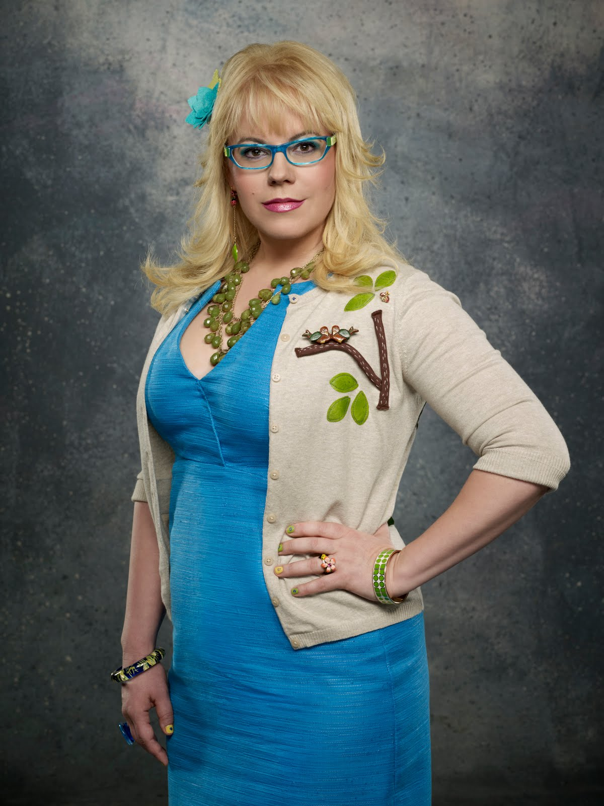
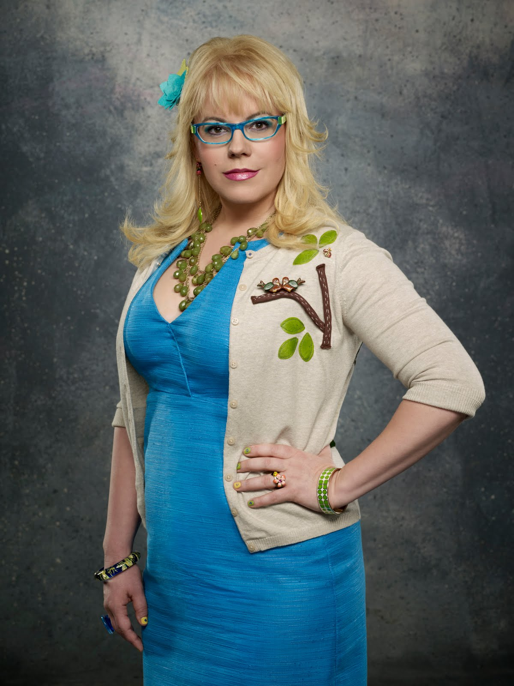
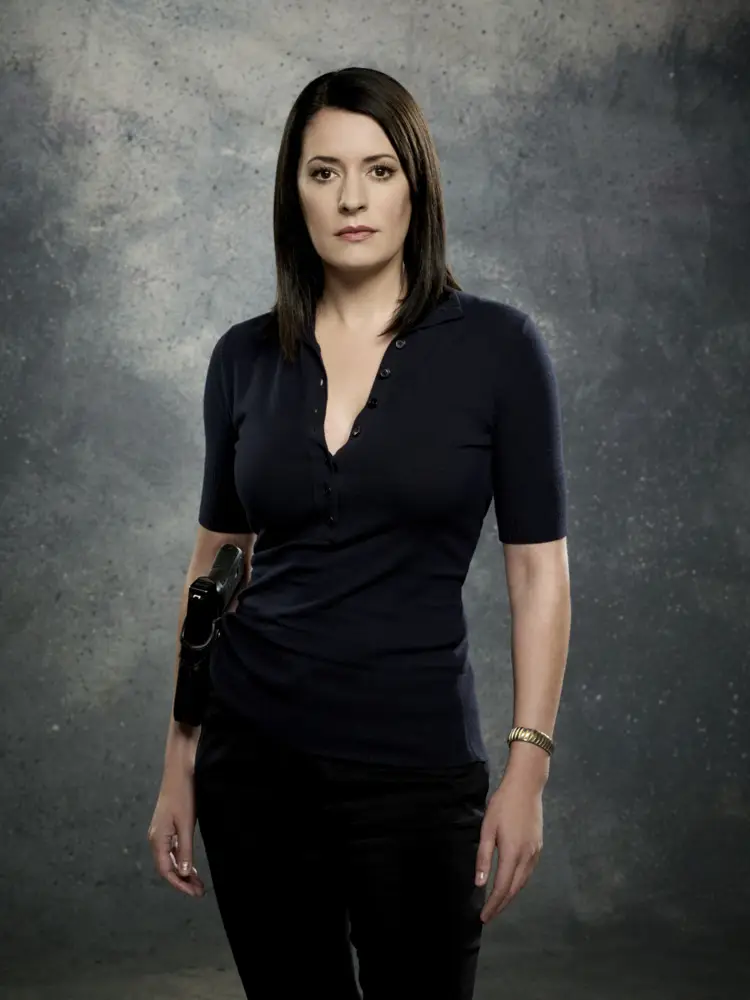
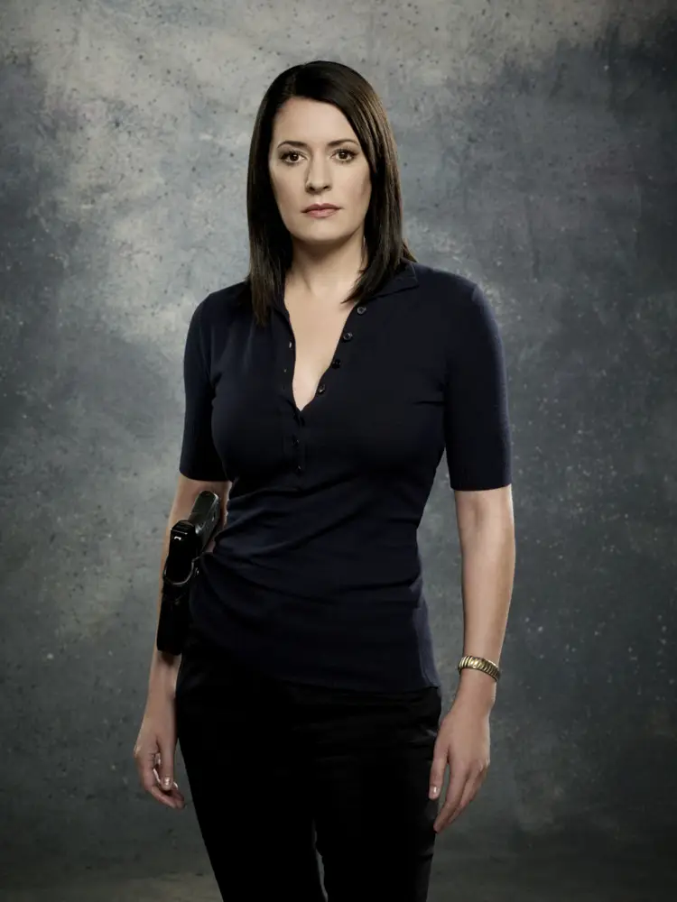

CRIMINAL MINDS gira em torno de uma equipe de elite de perfis da Unidade de Análise Comportamental do FBI (BAU) em Quantico, Virgínia. Profilers analisam as mentes criminosas mais distorcidas do país em um esforço para antecipar seus próximos movimentos antes que eles ataquem novamente. Cada membro da equipe traz sua própria área de especialização para a mesa enquanto identifica as motivações dos predadores e identifica seus gatilhos emocionais na tentativa de detê-los.
CRIMINAL MINDS , produzido pela The Mark Gordon Company em associação com a CBS Television Studios e ABC Studios , estreou em 22 de setembro de 2005 e terminou em 19 de fevereiro de 2020 na CBS .
A baixo temos os personagem principais que passaram durante essas 12 temporada


 

 



Sobre Mim
Olá meu nome e Yara :) O tema desse site foi escolhido por causa de memorias afetivas na minha infancia com a minha mae, gostava muito de assistir serie e documentarios criminais com ela quando crinça pois eram os momentos em que ficavamos justas, ate hoje continuo assistindo e apaixonada por cada serie e documentarios criminais pois todas vezes que assisto sinto paz e tranquilidade